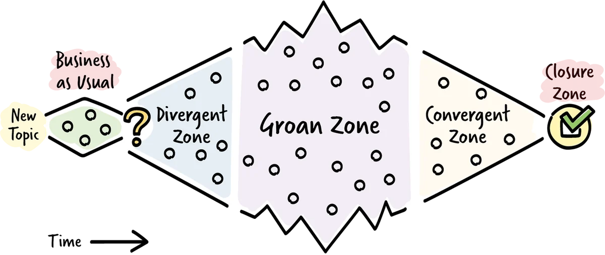

What this resource is for
In fast-moving organisations, the pressure to decide quickly is real — and the temptation to cut the decision process short is constant. AI-accelerated delivery creates conditions where alignment loops that used to take weeks now need to happen in hours. The risk is that groups skip the stages of a good decision process in the name of speed, and end up with decisions that unravel in implementation because the right perspectives were never heard. This resource covers how to move groups through a full decision process efficiently — creating genuine space for diverse perspectives while still reaching durable closure.
Moving a group from a shared problem to a shared decision is one of the most demanding facilitation challenges in organisations. It requires creating genuine space for diverse perspectives while still reaching closure. Done poorly, it produces either shallow consensus (everyone agrees because no one felt safe to disagree) or endless divergence (every meeting produces more options and more questions, but no decisions). This resource covers the Diamond Model from Participatory Decision-Making — a structural map of how group decision processes work — and the role of powerful questions in guiding groups through that process.
What facilitation is
Facilitation is the practice of helping a group identify shared objectives and move through a process to achieve them — while remaining neutral on the content. A facilitator does not decide what the group should conclude; they take responsibility for the quality of the process that leads to a conclusion. This distinction matters: when you step into the facilitator role, even temporarily, you set aside your own preferences about the outcome and focus entirely on enabling the group to think well together.
Facilitation can be thought of in three phases. Before a session, the facilitator prepares: understanding the participants, designing the process, and clarifying the purpose. During the session, the facilitator is fully present — guiding without directing, holding the space without filling it. After the session, the facilitator follows up to ensure that agreements and decisions are carried forward into action.
The facilitator's orientation throughout is toward three things: the purpose (what the group is trying to achieve), the people (ensuring everyone can participate and is heard), and the process (making sure the right things happen in the right order). When any of these three get neglected, the quality of the session suffers.
Good facilitation requires a specific behavioural stance. The facilitator stays neutral and avoids expressing personal bias; remains curious and asks questions that open up multiple perspectives; is respectful of participants even when addressing difficult dynamics; and is observant — continuously reading the room for changes in energy, engagement, and tension. The facilitator also needs to be comfortable standing in the discomfort that often arises in good group work, rather than resolving it prematurely.
The Diamond Model
The Diamond Model, developed by Sam Kaner and colleagues in Facilitator's Guide to Participatory Decision-Making, provides a structural description of how a group moves from a starting question to a decision. Understanding the model helps facilitators recognise where they are in the process and what kind of support the group needs at each stage.
The model describes a shape comparable to a diamond. The group begins in a narrow starting zone, expands outward through divergence, passes through a wide and uncomfortable middle zone, then contracts inward through convergence, and arrives at a narrow closing zone — a decision. The model is not linear in practice, but it gives the facilitator a map of the territory and a language for naming where the group is at any given moment.
A key insight from the model is that divergent thinking and convergent thinking cannot happen at the same time — they interfere with one another. The facilitator must make deliberate space for each stage at the appropriate moment.
The four zones

Business as Usual is the starting point of most conversations. In this zone, team members do not challenge the status quo and tend toward obvious, familiar solutions to the problem. They refrain from taking risks or being ambitious. The group is operating within the boundaries of what is already known and accepted. The facilitator should pay attention to the quality and quantity of each person's contribution. If the team converges too quickly on a proposal without genuinely exploring the problem space, the facilitator can help them move into the divergent zone by opening up the question and inviting different perspectives.
The Divergent Zone is where opinions and ideal solutions begin to differ. The atmosphere in this zone can be playful, curious, or nervous — creative thinking is happening, and not everyone is comfortable with it. This is the zone the facilitator must protect most carefully. Good divergence is genuinely inclusive: it surfaces viewpoints that would otherwise be suppressed, names concerns that would otherwise sabotage implementation later, and produces a richer solution space than any individual could have generated alone. The facilitator's job here is to hold the space open — using brainstorming, go-arounds, paraphrasing, and powerful questions to ensure that ideas are shared and diverse points of view are expressed without evaluation or pushback. Dissent must be protected in this zone; many great solutions start off as odd or seemingly silly ideas.
The Groan Zone is the name Kaner gives to the middle section of the diamond — the widest, messiest, most uncomfortable part of the process. When team members have shared their divergent perspectives, conflicts begin to emerge. This feels uncomfortable and stressful. The temptation is to collapse back to a safe, familiar answer rather than sit with the complexity. But these conflicts also fuel progress — they force team members to search for ways to integrate their different views and build a more durable shared understanding. The groan zone is not a problem to be solved; it is a necessary phase to be navigated. When a team skips it, ideas are not understood well enough, and the result is premature convergence and a decision that will likely prove unsustainable. The facilitator's job here is to help team members understand each other's perspectives better by discussing ideas constructively, naming the discomfort explicitly ("this feeling of messiness is a sign we're doing it right"), and holding the space while integration happens.
The Convergent Zone begins once the team has developed a shared enough understanding of the options on the table. Discussions feel smoother. There is a sense of making progress, and energy rises. The facilitator should let the team use this renewed energy to shortlist ideas and move toward a decision. Paraphrasing is helpful in this zone — reflecting back what has been said helps people recognise where they actually agree. Bridging questions are particularly valuable here: they sum up what has been heard and help build a figurative bridge between different positions, moving toward a conclusion the group can genuinely commit to.
Closure: reaching a decision
The Closure Zone is where the group must decide on a way forward. The facilitator's job is to guide the team in making that decision while ensuring it is clear what it entails and that everyone's level of support is visible and explicit.
A widespread confusion in organisational decision-making conflates consensus — everyone believes this is the best option — with consent-based closure — no one has a fundamental objection that would prevent moving forward. These are very different standards.
Consensus is rare and often not worth pursuing. In most decisions, reasonable people with access to the same information will have different views. Requiring everyone to believe the chosen option is the best one before moving forward is a recipe for either endless process or manufactured agreement that masks real dissent.
Consent-based closure asks a more tractable question: can you live with this decision and support its implementation, even if it is not your first choice? This is the right bar for most organisational decisions — it allows forward movement while respecting dissent. Participants who do not fully agree can still signal their support for moving forward, provided their core concerns have been heard and addressed.
Techniques such as Fist-to-Five, the Decider Protocol, or explicit consent rounds make each team member's level of support visible. A clear signal that a group is ready to close is when no new substantive objections are being raised — when the conversation is recycling rather than generating. At that point, the facilitator calls for the closing gesture.
Practical techniques by zone
Knowing which zone you are in is only useful if you have practical moves available for each. The following are not scripts — they are a repertoire to draw on as the situation requires.
In the Divergent Zone, the facilitator's primary job is to protect the space from premature evaluation. Pause any criticism until brainstorming is genuinely complete. Use silent writing — asking participants to write ideas individually before sharing — so that quieter voices are not drowned out by more confident ones before they have formed their thoughts. Paraphrase what you hear to check understanding and signal that you are genuinely tracking what people say. Ask clarifying questions with phrases like "What I understand you're saying is..." or "Help me understand..." rather than evaluative ones. Occasional nods or short verbal cues ("and?", "tell me more") encourage the speaker without interrupting the flow. Mirror body language subtly to create rapport, or deliberately shift your own posture to change the energy when a discussion is getting stuck.
In the Groan Zone, the facilitator's job is to hold the space rather than collapse it. Use structured go-arounds to ensure every voice is heard before the group moves on. Invite individual writing before wider sharing, which surfaces deeper reflections that might be lost in open discussion. Break into pairs or small groups to explore a specific tension in more depth and then report back to the whole group — this often unlocks perspectives that people are reluctant to voice in a larger setting. Resist the pull to resolve the discomfort too quickly; name it explicitly so the group understands that what they are feeling is a productive sign, not evidence of failure.
In the Convergent Zone, the facilitator's job is to bring discipline to the closing. Make the available decision-making techniques visible — Fist-to-Five, majority vote, consent round, Decider Protocol — and explain them briefly so the group can choose consciously rather than defaulting to an implicit process. Check whether the group has an existing working agreement about how they make decisions; if not, facilitate a quick agreement before proceeding. Focus the group on committing to one or two concrete actions rather than an overwhelming list that dilutes accountability.
Diamonds within diamonds
The Diamond Model does not only apply to entire meetings or workshops. It applies equally to individual segments within a longer session. Any time a group needs to explore a question, work through a disagreement, or arrive at a sub-decision, the same pattern applies: open the space, navigate the discomfort, close toward something concrete.
Thinking in terms of nested diamonds — a large diamond for the overall session, with smaller diamonds within each major segment — helps the facilitator plan more precisely and recognise more quickly when a segment has become stuck. A divergence that is not producing new ideas is probably ready to move to the groan zone. A groan zone that is looping without integration is probably ready for a focused convergence move. The facilitator who can read these signals within a segment, not just across the whole session, will produce much tighter and more productive meetings.
Powerful questions
Facilitation is, in large part, the art of asking the right question at the right moment. The questions a facilitator uses shape what the group is able to think about, and different types of questions serve different purposes across the zones.
Opening questions are used to begin the divergent zone. They are designed to be genuinely generative — to invite multiple valid answers rather than converging on one. "What are all the factors we should consider before making this decision?" or "What would a successful outcome look like from each of your perspectives?" are opening questions. The test is whether the question invites one answer or many.
Deepening questions develop and explore what has been offered. They follow something a participant has said and invite more. "Can you say more about that?" "What makes that the most important factor for you?" "What would we need to believe for that option to be the right choice?" Deepening questions signal that the facilitator is genuinely tracking the content, not just managing a process.
Broadening questions surface perspectives that have not yet been heard. "Who hasn't spoken to this yet?" "Are there people outside this room whose perspective we need to consider?" "What's the view we haven't heard yet that might be important?" Broadening questions interrupt the tendency for discussions to be dominated by the most confident or senior voices.
Bridging questions are particularly valuable in the convergent zone. They draw together what has been said and help the group move from a collection of positions toward something they can share. "Looking at everything on the table, what themes do we keep coming back to?" or "Where do we actually agree, even if we haven't said it explicitly?" are bridging questions. They build the connection between different contributions and help the group recognise its own emerging consensus.
Convergence questions move the group toward integration and closure. "Of all the options on the table, which best addresses the concerns we've named?" "What would we need to agree on first in order to move forward?" "Is there a proposal here that you could all live with?" These questions are directive — they pull toward narrowing rather than expansion.
Reality-check questions are used when the group is generating solutions without adequately engaging with constraints. "What would prevent this from working?" "What would need to be true for this to succeed?" "Who else would need to be on board for this to happen?" These catch problems in the convergence phase rather than after the decision has been implemented.
Sequencing in practice
A common facilitation mistake is mixing divergence and convergence questions in an unstructured way, which produces a conversation that neither expands effectively nor closes. The facilitator loses track of where they are, the group loses coherence, and the meeting ends with a vague sense of discussion rather than a decision.
The Diamond Model suggests a clearer sequencing. Begin in the Business as Usual zone and assess whether the group needs to be moved into genuine divergence. Use broadening and opening questions to expand the space. Hold the divergent zone with deepening questions and protect dissent. Navigate the groan zone by facilitating understanding across perspectives rather than pushing for premature resolution. Signal the transition to convergence explicitly — "We've heard a lot of important perspectives. I want to start moving toward what we can agree on." Then use bridging and convergence questions to close, and call for an explicit decision gesture in the closure zone.
Groups move back and forth within the diamond, and sometimes a convergence attempt surfaces a new concern that requires revisiting the divergent zone. But the facilitator should always know which zone they are in and be deliberate about how they move between them.
Further reading
- Kaner, S., Lind, L., Toldi, C., Fisk, S., & Berger, D. — Facilitator's Guide to Participatory Decision-Making (the source of the Diamond Model and the groan zone concept — the most important single reference for group facilitation in organisational contexts)
- Schwarz, R. — The Skilled Facilitator (a comprehensive treatment of facilitative behaviour and its effects on group dynamics)